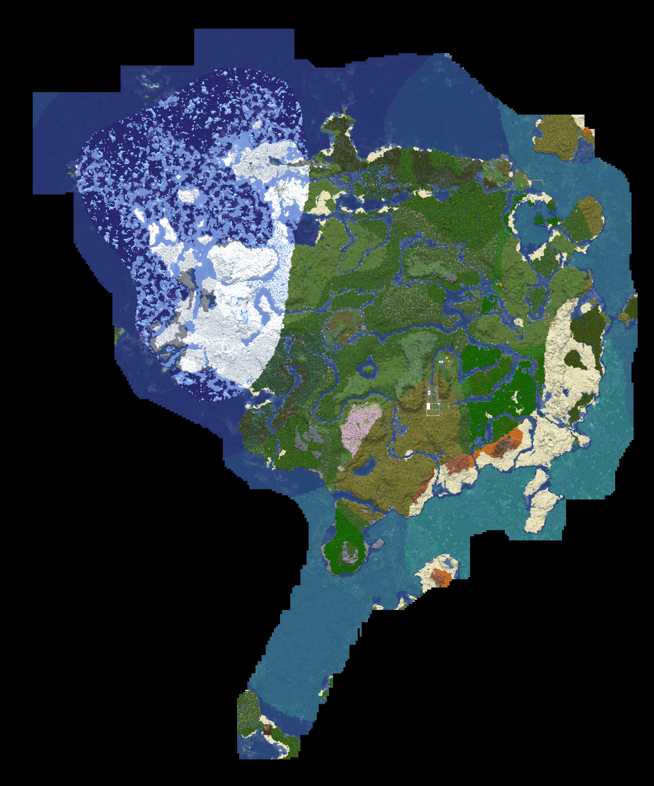

World archive
IsraelCraft
world map viewer.
Explore the server map, inspect the details, and find your way around the civilization.
IsraelCraft cartography division
Server map overview

Scroll to zoom • drag to pan • arrow keys to move • use the controls to reset